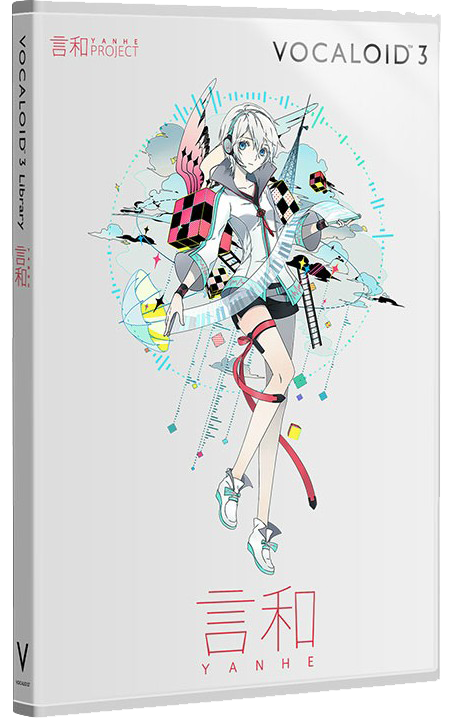
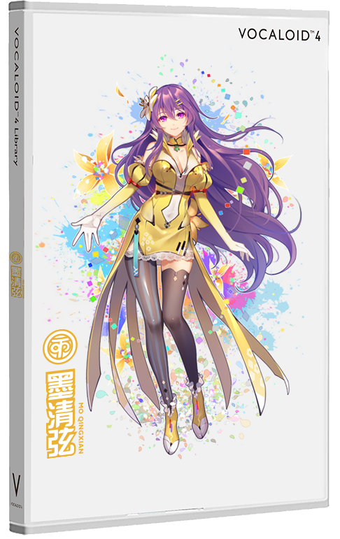

首页
虚拟歌手
资源
用户反馈
官网
Virtual Singers
CN
VOCALOID 3

洛天依 乐正绫 言和 心华
VOCALOID 4

洛天依CN 洛天依JP 星尘 墨清弦
徵羽摩柯 乐正龙牙 心华CN 心华JP
巡音流歌 初音未来 镜音双子
版权所有 Copyright © 2019 WorldlineChanger Personal. All rights reserved.